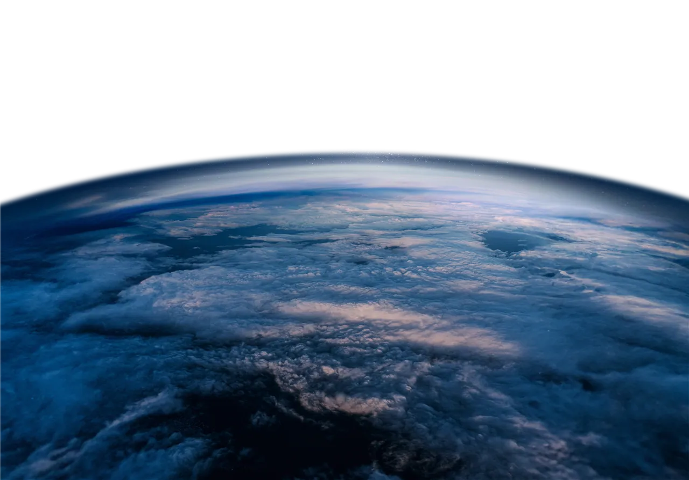
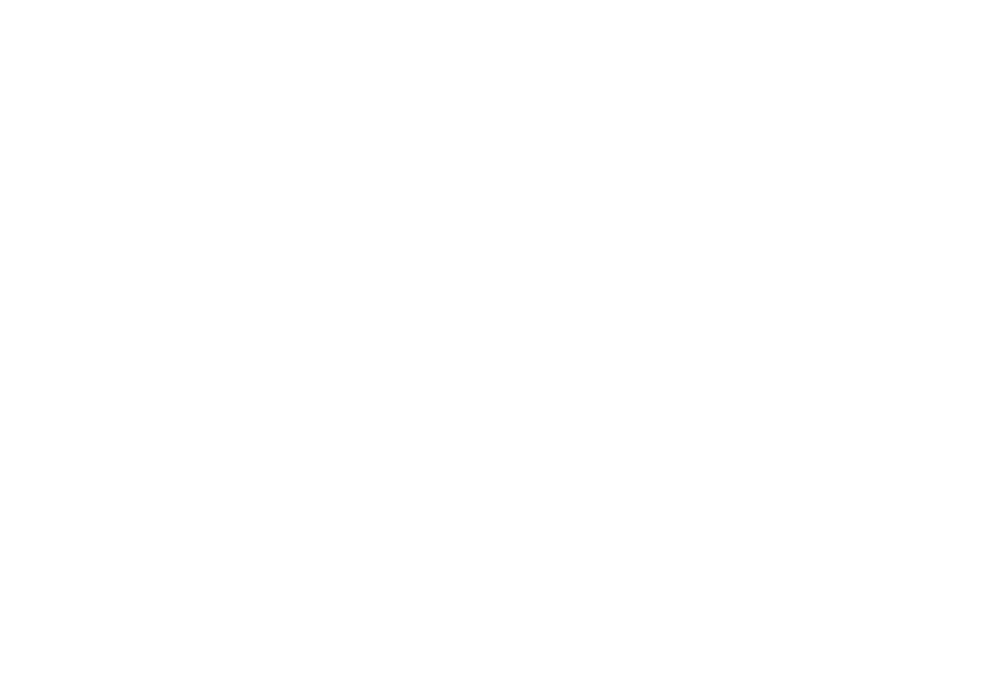
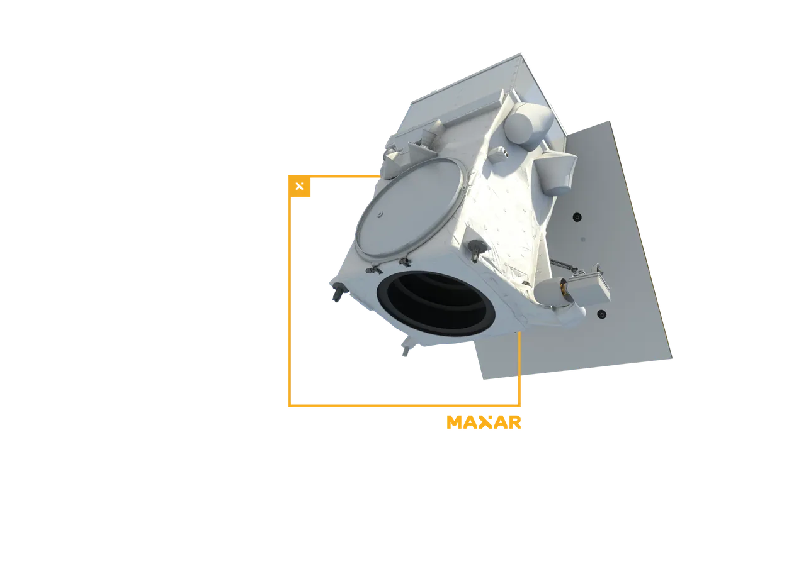
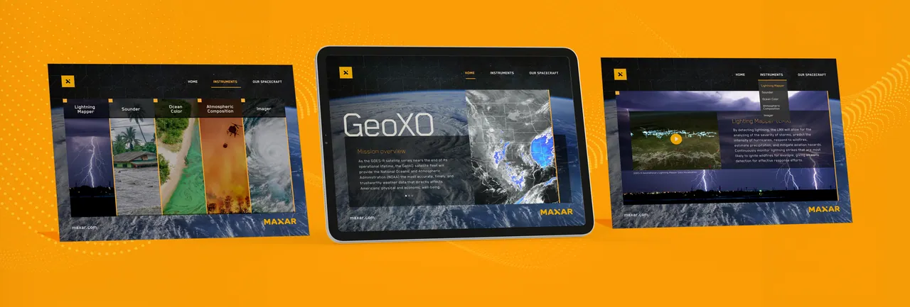
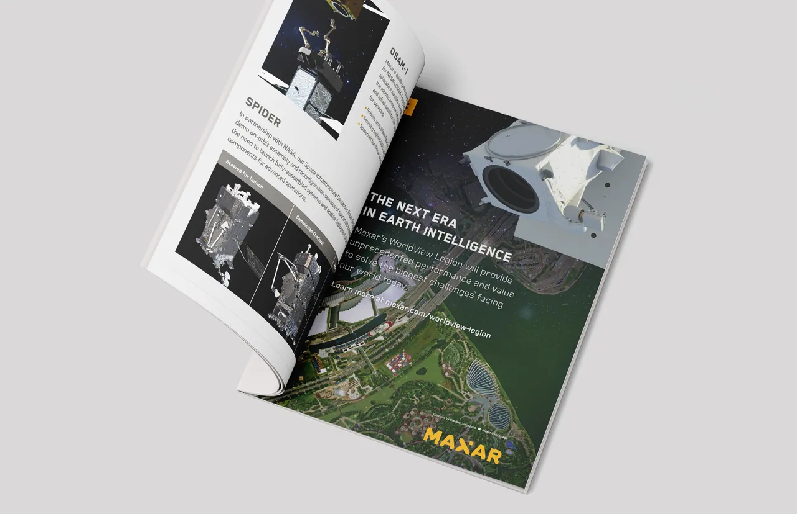
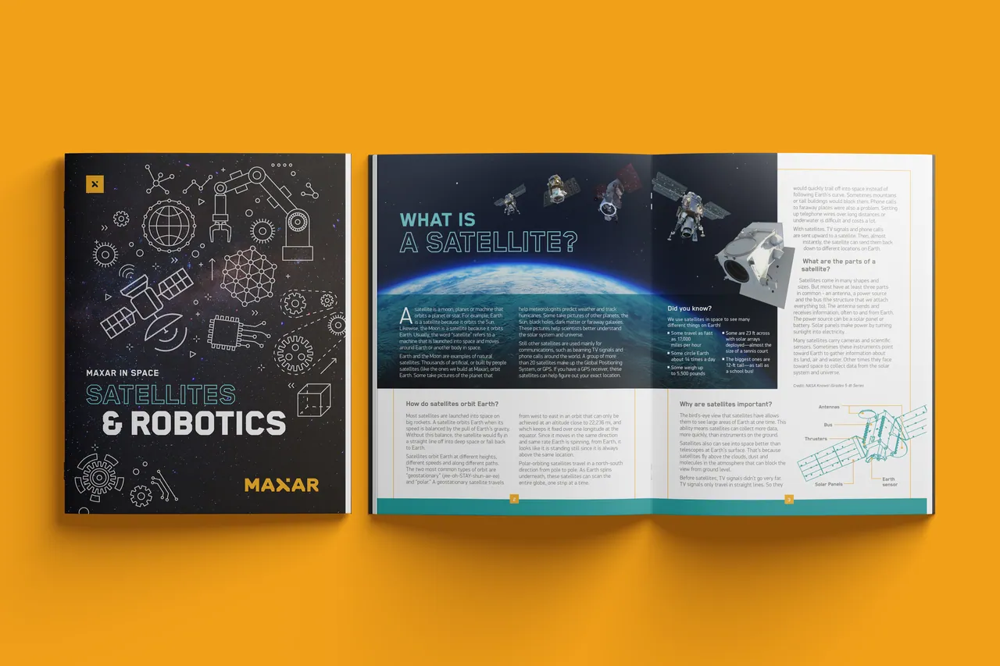
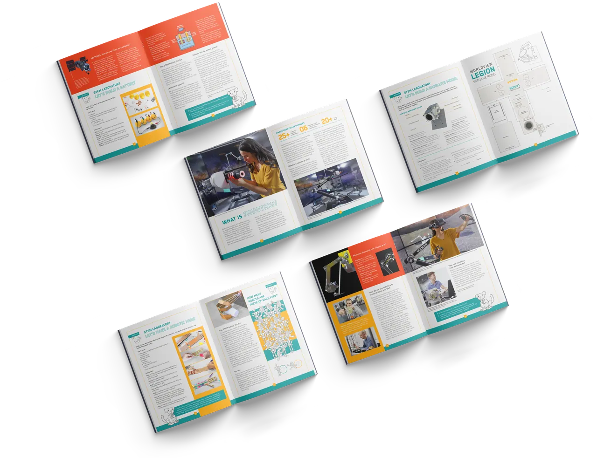

Branding & Visual Identity
Next-Gen Space Infrastructure
From satellites and spacecraft systems to robotics, Maxar develops the systems, hardware, and technology that power humanity’s reach beyond Earth. As Creative Art Director for the Space Infrastructure division, I provided creative direction for event booths, corporate graphic assets, and brochures.
Alongside leading the Space division’s creative work, I created the brand identity and visual language for digital proposals aimed at winning new contracts, built around a core message of innovation and the promise of solving problems on Earth and beyond.
- Role
- Creative Art Director
- Client
- Maxar Technologies, Space Infrastructure
- Years
- 2022–2023
- Marketing
- Katy Summerlin
- Technical Illustration
- Steven W. Howard
- Photography
- German Buenrostro

GeoXO
GeoXO Proposal Companion App
Visual Design
To support Maxar in winning new contracts, I developed a companion app for NOAA’s GeoXO proposal. The app showcased the spacecraft’s features and its capabilities for monitoring the Western Hemisphere as part of NOAA’s observing system.
Built around 3D models developed by Maxar’s engineers, the app showed how Maxar’s work would contribute to the mission: vital environmental information for long-term planning and short-term response.

GSTC 2023
Maxar at GSTC 2023: Shaping the Future of Space
Booth Design & Marketing Collateral
At the Global Space and Technology Convention (GSTC) 2023 in Singapore, Maxar sat on the keynote panel, sharing its perspective on the future of space exploration.
For the event I designed the booth, print ad, social media concepts, and apparel, all built around the WorldView Legion constellation, Maxar’s high-resolution Earth imaging system.

Satellites & Robotics
STEM & Space Activity Book
Editorial Design · Spring 2023 Event
For a spring event for Maxar employees and their families, I led the development of a space activity book that made STEM concepts and experiments engaging and fun, while highlighting Maxar’s role in that work.
I aligned it with Maxar’s existing K–12 materials for academic outreach and school visits, so the book worked beyond the event: an asset that entertained, educated, and showed Maxar’s commitment to STEM education.
